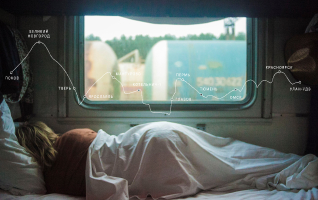

Путешествия по России
Настоящая страна не в выпусках новостей, а здесь.

ваша полка — верхняя
Чего мы там не видели?
По опросам ВЦИОМ, 95% россиян мечтают куда-нибудь поехать, но только 36% планируют провести
отпуск в родной стране. Мол, чего мы тут, дома, не видели? На самом деле, Россия — это целая
вселенная с ласковым морем юга, густыми лесами Саян и суровыми льдами плато Путорана. А ещё
увидеть все эти красоты можно без миллионов на счету, загранпаспорта и многочасовых перелетов.
Как, например, Вера Башмакова — смелая молодая мама, которая взяла в охапку троих детей,
усадила их в свою «Ладу» и проехала 20 тысяч километров по родной стране. Мы выбрали и описали
некоторые интересные места, достойные вашего отпуска.
- Часовых поясов 11
- Объектов природного наследия ЮНЕСКО 12
- Объектов культурного наследия ЮНЕСКО 16
- Природных заповедников 105
- Аэропортов 241
-
URL
park-kosa.ru

Здесь, посреди лесов и песчаных дюн, вы сможете увидеть два водных горизонта —
спокойного Куршского залива с одной стороны и подёрнутого рябью волн Балтийского
моря с другой. Уникальная природная зона на краю российского анклава.
На этом Калининградская область не заканчивается. Для путешественника и
исследователя там же по соседству — самая западная точка России, Балтийская коса, —
и немецкое наследие россыпи небольших приморских городов. Атмосфера здешних мест
исключает суету, окуная в спокойствие природы и запах стального, прохладного моря.
До Байкала «на собаках»
По мотивам учебной темы о Транссибе — путешествие от столицы до Байкала на электричках.